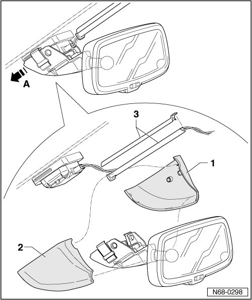

Interior Rearview Mirror
Interior Rearview Mirror
Removing
- Switch off ignition.
- Remove side covers - 1 - and - 2 -.
- Slide the interior rearview mirror out of the retainer in the direction of the - arrow A -.
- Open the cable channel - 3 - and disconnect the interior rearview mirror from the wiring harness.

Installing
- Perform the steps used for removal in reverse order.